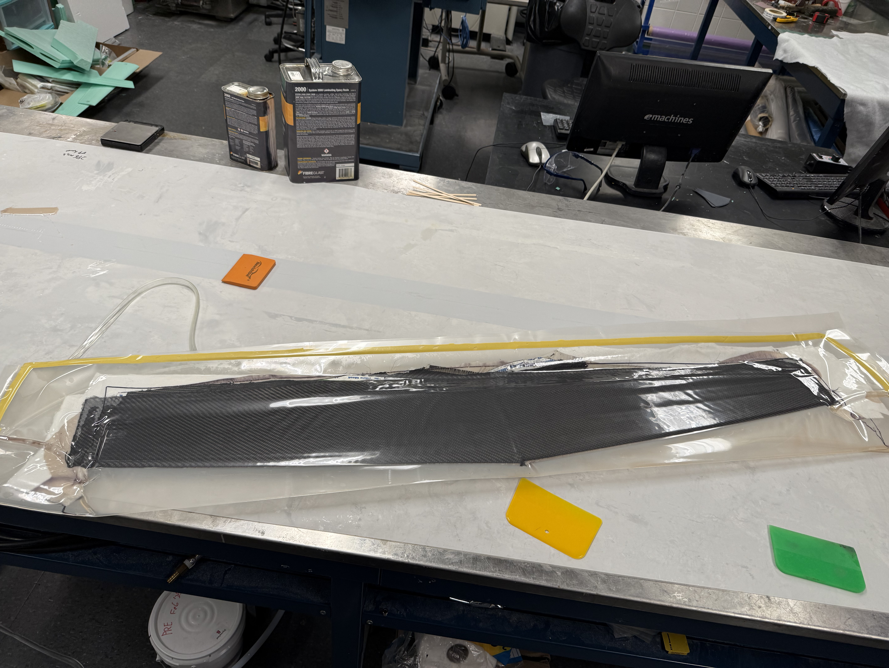
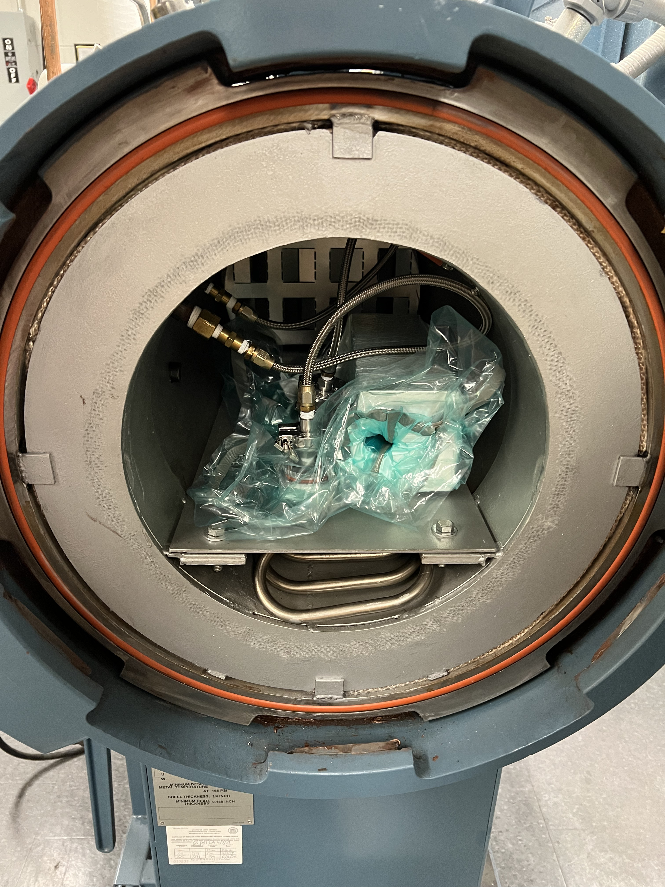

Internal Structure
The avionics bay and nose cone feature a rapidly machined G10 internal structure, chosen for its production reliabilty and radio transparency properties. The primary airframe is a roll-wrapped carbon fiber body tube, offering an exceptional stiffness-to-weight ratio across the full flight envelope.
The tail section and gridfin panels are fabricated from prepreg fiberglass and G10 respectively — all designed, cut, and cured entirely in-house.

Precision-cut G10 nose internals, carbon fiber body tube, and fiberglass tail assembly
Wing Construction
The wing is built using a unique wet-layup process over a foam core interior and aluminum rib. A tapered planform was selected for aerodynamic efficiency. This design choice increases manufacturing complexity, but by using avaiable materials differently we were able to achieve the desired geometry without large, expensive molds or tooling.
This allowed for substaintial reductions in drag while maintaining a relatively inexpensive and flexible fabrication process.

Carbon fiber wing under construction — foam core visible prior to final layup
Autoclave Processing
Our nose cone and tail assembly all undergo autoclave consolidation: an advanced composite curing process that applies controlled heat and pressure to eliminate voids, compact fiber layers, and produce tight, repeatable surface finishes.
The result is a measurable improvement in structural consistency and surface quality compared to oven-cure or room-temperature methods, improving both aerodynamic performance and long-term durability across repeated flights.

Nose cone bagged and staged for autoclave cure
Gridfin Actuation
Each gridfin is driven by a dedicated servo, coordinated through the custom mixing algorithm in our flight controller. The clip below shows the full actuation range under ground test conditions, confirming range of motion, symmetry, and structural rigidity of the in-house fabricated tail assembly prior to flight.
All three gridfins actuating through full range of motion